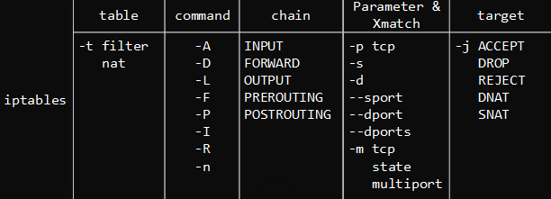

Iptables
Table of Contents
| Author | Hao Ruan (haoru@cisco.com) |
| Date | 2018-02-05 17:34:16 |
Table of Contents
1 基本原理
Netfilter是由Rusty Russell提出的内核防火墙框架， 该框架既简洁又灵活，可实现安全策略应用中的许多功能，如：
- 数据包过滤
- 数据包处理
- 地址伪装
- 透明代理
- 动态网络地址转换(Network Address Translation，NAT)
- 基于用户及媒体访问控制(Media Access Control，MAC)地址的过滤
- 基于状态的过滤
- 包速率限制
1.1 处理逻辑 (四表五链)

Figure 1: 逻辑处理顺序
从上往下：
第一个 Routing Decision：判断是否为本机处理，或是转发处理
转发处理需要开启：echo "1"> /proc/sys/net/ipv4/ip_forward
第二个 Routing Decision：判断数据包是否发向本地回环
第三个 Routing Decision：选择发出网卡
1.2 命令格式

Figure 2: 命令格式
iptables [ -t 表名] 命令选项 [链名] [匹配] [-j 目标动作或跳转]
1.2.1 表名
filter, nat, mangle, raw (默认为 filter)
1.2.2 匹配
通用匹配：
-p {tcp|udp|icmp}: 指定隐含扩展，其余扩展（如 state）必须由 -m 指定
-s, --src: 指定源地址
-d, --dst: 指定目标地址
-i <INTERFACE>: 指定报文流入接口，用于 PREROUTING,INPUT,FORWARD
-o <INTERFACE>: 指定报文流出接口，用于 OUTPUT,POSTROUTING,FORWARD
隐含匹配：
-p tcp:
--sport PORT|STARTPORT-ENDPORT: 源端口
--dport PORT|STARTPORT-ENDPORT: 目标端口
--tcp-flags <mask> <comp>: 检查<mask>中列出的标志位, <comp>中指明的必须为1，其余必须为零
如：--tcp-flags SYN,FIN,ACK,RST SYN,ACK
--syn: 等效于 --tcp-flags SYN,FIN,ACK,RST SYN,ACK
-p icmp:
--icmp-type: 0(echo-reply), 8(echo-request)
-p udp:
--sport
--dport
显式匹配：
-m state:
--state NEW|ESTABLISHED|RELATED|INVALID
-m multiport:
--source-ports
--destination-ports
-m iprange:
--src-range
--dst-range
-m connlimit:
--connlimit-above
-m limit:
--limit
--limit-burst
-m time:
--datestart
--datestop
--timestart
--timestop
1.2.3 命令选项
管理规则： -A: 在指定链的末尾添加（ --append ）一条新的规则 -D: 删除（ --delete ）指定链中的某一条规则，按规则序号或内容确定要删除的规则 -I: 在指定链中插入（ --insert ）一条新的规则，默认在链的开头插入 -R: 修 改、替换（ --replace ）指定链中的一条规则，按规则序号或内容确定 管理链： -F: 清空（ --flush ）指定链中的所有规则，默认清空表中所有链的内容 -N: 新建（ --new-chain ）一条用户自己定义的规则链 -X: 删除指定表中用户自定义的规则链（ --delete-chain ） -P: 设置指定链的默认策略（ --policy ） -z: 置零计数器 -r [CHAIN]: 清空指定规则链，如果省略 CHAIN，则删除对应表中的所有链 查看类： -L: 列出（ --list ）指定链中的所有的规则进行查看，默认列出表中所有链的内容 -n: 用数字形式（ --numeric ）显示输出结果，若显示主机的 IP 地址而不是主机名 -v: 查看规则列表时显示详细（ --verbose ）的信息 -x: 计数器取消近似 –line-numbers: 查看规则列表时，同时显示规则在链中的顺序号
1.2.4 目标动作
ACCEPT, DROP, REJECT, DNAT, SNAT, REDIRECT（端口重定向）, MASQUERADE（地址伪装）, LOG, MARK
2 常用命令
2.1 重置到默认状态
iptables -F iptables -X iptables -t nat -F iptables -t nat -X iptables -t mangle -F iptables -t mangle -X iptables -t raw -F iptables -t raw -X iptables -t security -F iptables -t security -X iptables -P INPUT ACCEPT iptables -P FORWARD ACCEPT iptables -P OUTPUT ACCEPT
2.2 查看信息
iptables -L -n -x
2.3 封堵端口
iptables -I INPUT -p tcp --dport 12345 -j REJECT iptables -I OUTPUT -p tcp --sport 12345 -j REJECT
2.4 创建自定义链
iptables -N my_chain iptables -A my_chain -d 255.255.255.255 -p icmp -j DROP # 添加规则 iptables -A my_chain -p tcp ! --syn -m state --state NEW -j DROP # 添加规则 iptables -I INPUT -j my_chain # 添加自定义链跳转 iptables -X my_chain # 删除自定义链，仅当自定义链为空
2.5 禁止 SYN floods
# Limit the number of incoming tcp connections # Incoming syn-flood protection iptables -N syn_flood iptables -A INPUT -p tcp --syn -j syn_flood iptables -A syn_flood -m limit --limit 1/s --limit-burst 3 -j RETURN iptables -A syn_flood -j REJECT # --limit 1/s: Maximum average matching rate in seconds # --limit-burst 3: Maximum initial number of packets to match
2.6 限制连接数
iptables -I INPUT -p tcp --dport 22 -m connlimit --connlimit-above 3 -j DROP # 超过 3 个连接则拒绝
2.7 防止 DoS
利用 recent 和 state 模块限制单个 IP 在 300 秒内只能与本机建立 3 个新连接，被限制 5 分钟周恢复访问
iptables -I INPUT -p tcp --dport 22 -m state --state NEW -m recent --set --name SSH iptables -I INPUT -p tcp --dport 22 -m state --state NEW -m recent --update --seconds 300 --hitcount 3 --name SSH -j DROP # --name: 指定记录名称 # --set: 记录数据包的来源 IP，若已存在，则更新 # --update: 每次建立连接都要更新记录 # --seconds: 必须与 --rcheck 或 --update 同时使用 # --hitcount: 必须与 --rcheck 或 --update 同时使用 # 记录保存于：/proc/net/ipt_recent/SSH
2.8 记录日志
`-j LOG –log-prefix "prefix msg"`
for c in PREROUTING OUTPUT; do iptables -t nat -I $c -d <dest-ip> -j LOG --log-prefix "DBG@$c: " --log-level 4 # log level: 0 - 7 # 4: standard syslog level (warning) # 7: debug done
2.9 地址转换
会自动建立 NAT session 表
iptables -t nat -A POSTROUTING -s 192.168.0.0/24 -j SNAT --to-source 1.2.3.4 iptables -t nat -A POSTROUTING -s 192.168.0.0/24 -j MASQUERADE # 类似于 SNAT，但会自动选取一个外网地址，适用于外网 IP 变化的情况 iptables -t nat -A PREROUTING -d 1.2.3.4 -p tcp --dport 80 -j DNAT --to-destination 192.168.0.3 iptables -t nat -A PREROUTING -d 1.2.3.4 -p tcp --dport 80 -j DNAT --to-destination 192.168.0.3:8080
2.10 端口转发
iptables -t nat -A PREROUTING -d 1.2.3.4 -p tcp --dport 80 -j REDIRECT --to-port 8080 # 本地端口转发 iptables -t nat -A PREROUTING -d 1.2.3.4 -p tcp --dport 80 -j DNAT --to-destination 192.168.0.3:8080 iptables -t nat -A PREROUTING -d 1.2.3.4 -p tcp --dport 80 -j DNAT --to-destination 127.0.0.1:8080 # 若 8080 监听于 localhost，则需要执行：sysctl -w net.ipv4.conf.all.route_localnet=1
2.11 规则保存与加载
iptables-save > /etc/iptables/iptables.rules iptables-restore < /etc/iptables/iptables.rules